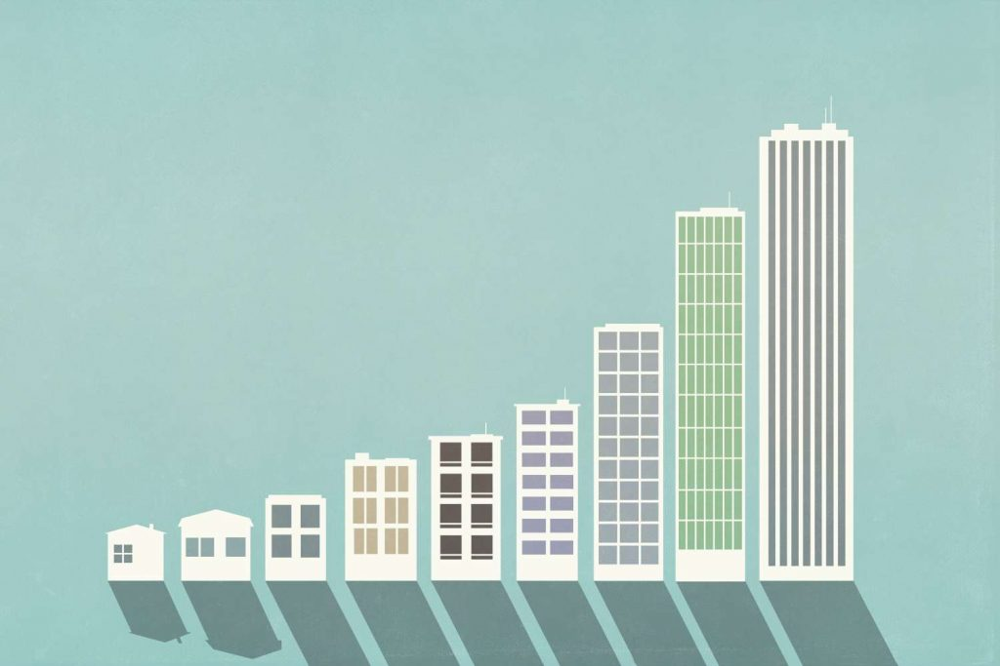
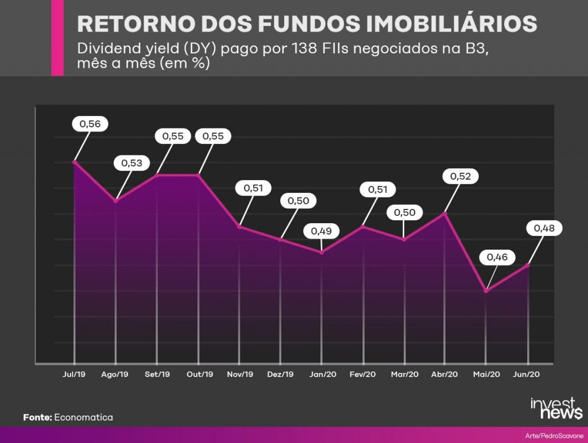

Cotas de fundos imobiliarios

O que são?
Cotas. Como acontece nos outros tipos de fundos, o patrimônio dos imobiliários é dividido em cotas. E são cotas que o investidor adquire ao aplicar em uma dessas carteiras. O retorno – seja pela distribuição dos rendimentos, seja pela valorização – é calculado proporcionalmente ao número de cotas que cada um possui.

Como elas rendem?
Os dividendos dos FIIs, também chamados de rendimentos, correspondem ao valor que os cotistas vão receber por sua participação nos lucros do Fundo. Então, a maioria dos investidores utilizam esses rendimentos como forma de ganhar renda passiva. Eles são semelhantes aos dividendos das ações.